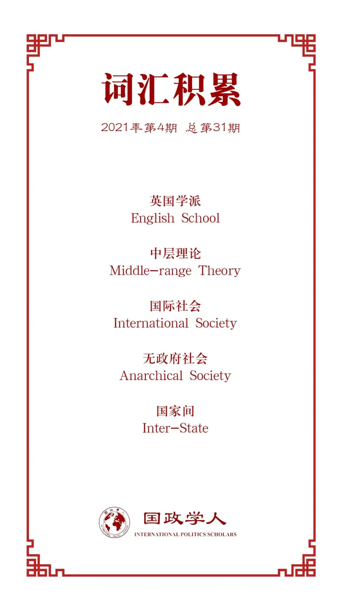

收录于合集 #理论研究 96个

作品简介
【作者】 Nicholas Lees，利物浦大学讲师，研究兴趣主要为世界政治中的冲突与不平等、历史上关于公民权的斗争与经济安全如何塑造国际体系。
【编译】 池佳曈（国政学人编译员，吉林大学行政学院）
【校对】 阮含含、杨朔
【审核】 晋玉
【排版】 黄晨蕊
【美编】 李九阳
【来源】 Nicholas Lees (2021) Why the English school needs conflict studies: Retheorising the place of war in international society, Cambridge Review of International Affairs ,34:1,3-21.
【归档】 《国际关系前沿》2021年第4期，总第31期。
期刊简介
《剑桥国际事务评论》（ Cambridge Review of International Affairs ）于1985年创立，是国际关系同行评审学术期刊，以季刊形式发行。由剑桥大学国际研究中心（现隶属牛津大学政治与国际关系学院）编辑，Routledge出版。据2019年Journal Citation Reports显示，该期刊影响因子为1.366。
为何英国学派需要冲突研究？——国际社会中战争作用的理论化
Why the English school
needs conflict studies:
Retheorising the place of war in international society
Nicholas Lees
内容提要
英国学派认为，战争是国际社会的一种制度，并为理解战争提供了强有力的框架。然而，他们对于国家间不安全原因的分析仍不完备，未能发展出基于这些核心观点的中层理论。但以上问题可通过定量冲突研究加以弥补。这种将科学与传统研究方法的结合看起来似乎不具备可行性，但方法层面的障碍可通过将战争的情况与原因放在历史语境中加以解决。冲突研究中的发现证明， 英国学派将战争理解为无政府社会的制度和解决行为体间争议的规范是正确的 ，方法之间更深层次的对话也能进一步加深我们对国际制度如何塑造战争与和平的理解。
文章导读
01
引言
赫德利·布尔在其著作《无政府社会》中，提出战争是国际社会的一种制度。为 充分理解国际社会对战争的观点 ，英国学派有必要将传统研究与定量冲突研究相结合。
文章认为，定量研究的结果可以用假设检验解释，也可以将其视为关于国际历史的描述性概括。文章指出布尔对战争的概念化在现有的英国学派研究中令人信服，但理论上并非完备。对战争存在合理性的研究很丰富，但对其起因、背景的研究尚为不足。国际政治实际上并非所有人针对所有人的战争，而是一个分散(decentralised)的社会，其中领土等有争议的问题有可能使国家陷入竞争和敌对。战争能够解决政治冲突，但只是解决分歧的可能机制之一。冲突研究中的一些中层理论与这一主张一致，认为战争起源于有争议的权力主张而非普遍存在的权力斗争。冲突研究不仅加强了英国学派对无政府社会论述的合理性，而且证明了布尔将战争作为制度的有效性。
02
**** 冲突研究与英国学派
——超越“科学”“传统”之分？
英国学派的研究传统和定量冲突研究之间能否进行深入交流？英国学派学者研究世界政治基本规范的演变，并将其与基于国内、国际秩序的观点相联系；冲突研究则根据量化的经验指标进行，以变量之间的关系验证假设，二者之间存在很大分歧。布尔作为传统方法的倡导者对行为主义持怀疑态度，认为量化分析结果能够验证已有的直观印象时才可以接受。定量研究的基本原理是对世界政治模式的经验主张进行系统评价，虽然一些因素难以量化，但很难证明战争与和平问题的起因不具实质重要性。
从事量化研究的学者们通常对某一特定变量对结果的影响感兴趣，这引发了对其忽视环境的批评。布赞主张采取历史社会学方法，将社会现象分解成相互作用的网络，研究事件相互联系的方式并考虑环境的影响。冲突通常存在历史背景，大多数可通过敌对关系的模式理解。许多定量冲突学者限制了其主张的时间范围，认为在国际历史的不同时期可能存在不同类型的关系。即使难以检验假设，定量方法也可以让我们评估理论模型在多大程度上与数据相符合，并考虑到对于国际关系史更丰富的叙述。因此，定量冲突研究与英国学派学者的历史导向视角之间的差距是真实的，但并非不可弥合，哲学方法论方面的差异不应妨碍不同研究传统之间的对话甚至综合。
03
**** 战争——
国际社会的一种制度
英国学派对冲突研究的主要贡献是它将战争视为国际社会的一种制度。国际社会使得行为体受到共同的权利义务观念支配，但 国际社会的建立并不意味着和平，事实上是不稳定的 。国际社会中不安全虽然存在，但不会使国家彼此竞争以至毁灭。战争是国际社会中的特殊状态， 一套复杂的规则界定了国际社会 ，并确立了独立的、受领土限制的政治共同体的合法性，尽管如此， 这些政治共同体仍统一于相互承认的义务 。只有在国家处于战争状态时，使用有组织的致命武力才具备合法性。在某些情况下暴力既受到限制，又被视为国家的特权。
布尔从四个方面论证战争是一种国际制度。首先，严格意义上的战争是主权国家之间有组织的暴力。布尔指出，将战争权分配给国家具有限制暴力和维持国际秩序的重要作用。第二，战争的制度化性质在于对战争行为的管制和对使用武力的限制。第三，一国会为合法化其战争行为寻找理由从而应对他国批判，而其它国家对战争造成的任何政治变化的默许会使关于战争的具体规则随着时间的推移而变化，这反映了国际社会不断变化的价值观和更广泛的制度框架。第四，战争作为一种执行机制和解决争端的手段，是工具性和目的性的统一。战争在其典型的历史功能中提供了一种执行国际法、解决有利于一方或另一方的政治冲突的机制。
英国学派将战争作为国际社会核心制度是令人信服的。严格来讲，战争是国家根据某些规则从事的争端解决活动。在无政府社会中，战争在主观上被认可为国家维护其权利、维护其共同利益和进行变革的手段。
04
**** 国际社会与冲突的条件
英国学派由于缺乏有关战争的中层理论，借鉴其他学派的观点，导致一些论点既不符合国际社会的基本逻辑，也不符合定量冲突研究的结论。 英国学派学者没有指出何种情况下易于发生战争或何种情况下国际社会的制度将限制暴力。 纳瓦里(Navari)认为，英国学派的研究旨在分析特定历史时期的历史意识，承认国际社会的“游戏规则”可以产生具有可视行为效应的模式，并对此提供因果解释。本文采取类似方法，认为国际社会的规则产生了模式，可以通过统计分析揭示国际社会规则的运作及其对行为的影响。
英国学派的主要弱点是对战争原因的论述不完备。如果没有更全面的理论解释为何国际社会中爆发冲突，则英国学派学者或认为战争发生的原因太多，或回归从其他研究传统中得出的经验。这似乎是对霍布斯的主张的默认，即缺乏中央权威是战争的原因。如果无政府状态下的国家间存在战争的一般条件，那么特定战争的原因不具备理论意义。但这与英国学派对世界政治和霍布斯自然状态之间的类比的有力批判是不一致的。因此，国际社会传统缺乏从其自身核心理论假设中得出的令人信服的冲突解释。
如果战争是国际社会规则框架所允许的一种特殊情况，那么关于战争的中层理论的发展应侧重于国家进入和离开战争状态的原因，以及这一进程如何与国际社会的基本制度特征相联系。这一冲突研究的分支产生了一系列可解决这些问题的依据。
05
**** 无政府社会中的冲突
虽然大量的冲突研究学者探究世界政治的制度框架如何塑造战争，但现存对竞争和战争的研究与国际社会研究关系最为密切。国际政治中竞争不必然导致战争，战争起源于有争议的权力主张而非普遍存在的权力斗争。
从历史上看，战争被视为实现变革的合法途径，军事胜利赋予了战争某些权利和义务。在历史上的某个时刻，政治团体了解到有组织的暴力可以成为解决争端的有效且适当的途径。在英国学派对定量冲突研究的一项贡献中，霍尔斯蒂(Holsti)回顾了1648年至1989年期间战争中所涉及的问题，发现62%的战争直接涉及领土，另有22%的战争与领土问题有关。 建立和划定领土边界的方式已被制度化，塑造了战争等其他制度。由于领土具有很高的象征意义和物质价值，争端很可能从军事对抗升级为战争。
国家间互动并非机械地由国际体系结构决定，同样受到外交文化的影响。因此除了有组织暴力之外，还可能存在分配领土和确定边界的机制（如国际法），国际社会通过确立关于拥有领土的原则，决定了国家何时使用和平手段解决争端，何时诉诸武力。
英国学派理论既不主张无政府社会的规范是固定的，也不主张存在和平的必然趋势。俄罗斯吞并克里米亚表明，领土完整的规范没有得到保证。如果国家间战争的衰落是自愿仲裁、领土完整规范的加强和国际法对第三方国家的影响的结果，那么英国学派对战争作用的阐释仍然是有说服力的，真正的挑战在于替代机制能否更好地解释当前趋势。在美国单极的时代，战争可能不再局限于国际社会中解决争端的制度。战争不再是主权国家之间的决斗，而是像殖民时代那样作为规范等级的工具，理解大国对武装冲突的干预可能需要进一步研究过去的殖民冲突。对这类战争及其与国际社会制度的关系进行调查，可以利用定量冲突研究和英国学派的优势，在全球等级制度的框架内促进对区域国际社会发展的理解。
06
结论
对战争与和平的定量研究证实制度因素在有组织暴力中的重要性，国际社会的制度框架提供了是否使用了武力的判定标准。英国学派未能发展出源于自身核心假设的中层冲突理论，通过与当代冲突研究的结合，其战争概念得以完善。战争并非仅仅是国际社会的制度，更是尝试限制有组织的暴力的产物。英国学派和定量冲突研究之间的接触障碍并非难以逾越，通过利用现代冲突研究的成果，布尔的战争概念能够为研究国际社会中战争地位的不断变化提供基础。
译者评述
在战争问题上，英国学派的基本价值取向深受格老秀斯思想传统的影响，主要分为以下几个方面：第一，国际社会的战争观，即国际社会也像国家一样有其自卫权和强制权，因而战争也是国际社会的一项基本功能。第二，对战争施加严格的规范性约束，尽可能排除战争的偶发性。第三，坚持伦理判断和价值判断，赋予战争行为以最起码程度的人性[1]。本文指出，英国学派为理解战争作为一种国际社会中的制度提供了强有力的框架，但未能发展出基于这些核心观点的中层理论，可通过与定量冲突研究相结合来解决。研究方法层面，英国学派始终坚持人文主义的方法，认为国际政治不同于自然科学，国际事件之间的联系不一定就是因果联系，在很多情况下国际关系只能阐述 (interpret) 不能说明 (explain) ，只能描述不能预测，应当采用历史学、哲学和法学的视角。怀特指出：“国际政治的性质、对外交的有限关注，更多地是在历史著作中，而不是在政治理论或国际理论的著作中体现和表达出来的。”[2]但同时，英国学派并不彻底排斥实证主义，只是反对过度推崇以自然科学为模型的实证主义，认为将国际关系理论置于严格的框架下并通过缜密的科学验证在某种程度上是无意义的。文章中提出的将科学与传统研究方法的结合可通过将战争置于历史语境中得以实现，方法之间更深层次的对话将深化我们对国际制度如何塑造战争与和平的认知。冲突研究不仅加强了英国学派对无政府社会论述的合理性，而且证明了英国学派将战争作为一种制度的有效性。文章的主要创新之处在于研究方法层面将经典的人文主义研究方法与定量的冲突研究相结合，完善了英国学派关于战争的中层理论。
参考文献
【1】宋德星.英国学派的战争哲学:格老秀斯式的理论解读[J].世界经济与政治,2005(10):26-31+4-5.
【2】（美）詹姆斯·德·代元（James Der Derian）主编；秦治来译.国际关系理论批判[M].杭州：浙江人民出版社,2003
词汇整理

文章观点不代表本平台观点，本平台评译分享的文章均出于专业学习之用, 不以任何盈利为目的，内容主要呈现对原文的介绍，原文内容请通过各高校购买的数据库自行下载。
好好学习，天天“在看”
国政学人
支持学术公益与知识传播
微信扫一扫赞赏作者 __赞赏
已喜欢，对作者说句悄悄话
取消 __
发送给作者
发送
最多40字，当前共字
上一页 1/3 下一页
长按二维码向我转账
支持学术公益与知识传播
受苹果公司新规定影响，微信 iOS 版的赞赏功能被关闭，可通过二维码转账支持公众号。